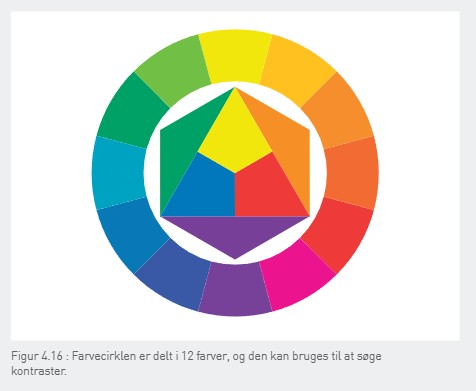

Interaktion:
Interaktion er samspillet mellem en bruger og et it-system, hvor brugeren giver input (f.eks. klik eller tastetryk), og systemet reagerer med et output (f.eks. en ændring på skærmen). Det handler om, hvordan brugeren og systemet kommunikerer og arbejder sammen.
Kommunikationsproces (afsender/hensigt, videregivelse/kommunikationsmiddel, modtager/reaktion):
Afsender/Hensigt: Afsenderen har et budskab eller en hensigt, som skal formidles.
Videregivelse/Kommunikationsmiddel: Afsenderen vælger et kommunikationsmiddel (som f.eks. mundtlig tale, tekst, billede, email) for at overføre budskabet til modtageren.
Modtager/Reaktion: Modtageren modtager og tolker budskabet, og beslutter, om der skal reageres eller handles på det.
Kommunikationsforstyrrelser:
Kommunikationsforstyrrelser sker, når der opstår misforståelser mellem afsender og modtager. Det kan skyldes uklart sprog, tekniske problemer eller forskellige fortolkninger. For at undgå det er det vigtigt, at afsenderen er tydelig og tjekker, at modtageren forstår budskabet.
Ikoner (fordele/ulemper ved ikoner):
Ikonernes fordele kan være at tiltrække kunder til ens virksomhed, app mm.
Farver spiller en stor rolle ved ikoner, for at kunne fortælle, hvad virksomheden eller appen handler om.
Ikonernes ulemper kan være, at en kedelig ikon ikke vil skabe opmærksomhed.
Laswells kommunikationsmodel:
Modellen hjælper med at forstå, hvordan kommunikation fungerer, og hvad der er vigtigt at tænke over. Den bygger på fem vigtige spørgsmål, som afsenderen skal overveje.
1. Hvem:
Hvem er afsenderen, og hvad er afsenderens intention med kommunikationen? Dette spørgsmål handler om at forstå afsenderens rolle og hensigt bag budskabet.
2. Siger hvad:
Hvad vil afsenderen gerne sige? Det handler om selve beskeden og det, der bliver kommunikeret.
3. Gennem hvilken kanal:
Hvordan bliver budskabet sendt ud? Lasswell tænkte oprindeligt på, om annonceringen skete gennem avisannoncer, plakater eller biografreklamer. I dag er det dog vigtigere at overveje, hvordan brugeren modtager budskabet, om det sker via en smartphone, en PC med stor skærm, en tablet osv. Alt efter hvilken enhed der bruges, skal ting som skriftstørrelse, layout, overskrifter og farver tilpasses, så budskabet bliver så tydeligt og effektivt som muligt.
4. Til hvem:
Hvem skal modtage budskabet? Det er vigtigt at vide, hvem målgruppen er, fordi det bestemmer, hvordan man bedst siger det, så det giver mening for dem.
5. Med hvilken effekt:
Det handler om, hvad afsenderen gerne vil opnå med kommunikationen. For eksempel kan målet med en reklamekampagne være at øge salget med 10 %.

Interaktionsdesign (IxD):
Interaktionsdesign handler om at skabe it-produkter, der er nemme og behagelige at bruge. Fokus er på at sikre, at brugeren hurtigt og effektivt kan udføre de ønskede opgaver. Det indebærer at designe funktioner og grænseflader, der fremmer brugervenlighed, hvilket gør systemet lettere at forstå og bruge.
Brugervenlighed:
Brugervenlighed betyder, at et system eller produkt er nemt at bruge, effektivt til at udføre opgaver og giver en god oplevelse for brugeren. Det handler om, hvor hurtigt og uden problemer brugeren kan forstå og interagere med systemet.
Brugergrænseflade:
Brugergrænsefladen er det, brugeren ser og bruger for at interagere med et it-system, som f.eks. knapper, skærme eller menuer. Den gør det muligt for brugeren at styre systemet. Designet skal være nemt og tilpasset den person, der bruger systemet mest.
Brugertyper (primær/sekundær):
Brugertyper handler om de forskellige personer, der bruger et it-system. Hver type har forskellige behov og måder at interagere med systemet på. For eksempel kan en primær bruger bruge systemet ofte, mens en sekundær bruger kun bruger det sjældent. Designet skal tage højde for, hvem der bruger systemet mest.
Steve Krug: Don't make me think:
Webdesignen skal være brugervenligt. Designet skal være enkelt og selvforklarende, så brugeren nemt kan finde ud af det uden forvirring.
Brugsmønstre:
Et brugsmønster beskriver de handlinger, en bruger gennemfører for at løse en bestemt opgave ved hjælp af et produkt eller en brugerflade. Det handler om at forstå hvad brugeren gør, hvordan de gør det, og i hvilken rækkefølge handlingerne sker.
Brugsmønstre er vigtige inden for interaktionsdesign, da de hjælper med at gøre de mest anvendte opgaver enkle og lettilgængelige, mens mindre almindelige opgaver kan kræve flere trin. For eksempel er det hurtigt og nemt at sende en besked i Messenger, fordi det er en typisk handling, mens det tager lidt længere tid at oprette en ny gruppechat, fordi det sker mere sjældent.
Ved at analysere brugsmønstre kan man designe en brugerflade, der passer til brugernes behov og vaner, så de væsentligste funktioner er nemme at tilgå, mens mindre relevante funktioner kan gemmes væk.
Normans 6 designprincipper:
1. Visibility (Synlighed)
Funktioner, som brugeren ofte anvender, skal være let tilgængelige og synlige. Hvis en funktion er svær at finde, kan brugeren overse den og tro, at den ikke eksisterer. Sjældent brugte funktioner kan skjules for at reducere visuel støj.
2. Constraints (Begrænsninger)
Brugeren bør kun præsenteres for relevante valgmuligheder for at undgå forvirring. Begrænsninger guider brugeren mod de ønskede handlinger og forhindrer fejl. Et godt princip her er "Keep it simple, stupid" (KISS).
3. Affordance
Et produkt eller en funktion skal tydeligt signalere, hvordan det skal bruges. En stol indbyder til at sidde på, en dørhåndtag til at blive trukket eller skubbet, og en blå, understreget tekst indbyder til at blive klikket på. Dette gør det intuitivt for brugeren at interagere med produktet.
4. Mapping
Der skal være en logisk sammenhæng mellem en handling og dens effekt. For eksempel skal en "Op"-knap føre brugeren opad, og en lydstyrkeknap med et "+" skal øge lyden. Hvis mapping ikke er intuitiv, kan brugeren blive forvirret.
5. Consistency (Konsistens)
Systemet skal være konsistent i sin funktionalitet og udseende. Brugeren lærer hurtigt et system, hvis det fungerer på samme måde hver gang, og brugerens erfaringer på én skærm skal kunne overføres til en anden skærm.
6. Feedback
Brugeren skal altid få en umiddelbar reaktion på sine handlinger. Dette kan være visuelle ændringer (som en knap, der ændrer farve), lyde eller haptiske signaler (mobiltelefonens vibration). Hvis et system er langsomt, bør det vise en indikator, såsom en indlæsningsanimation
Typografi
- Fonte:
Fonte er forskellige typer af skrifttyper, der bruges til at formidle tekst visuelt. Valget af font har stor betydning for, hvordan en tekst bliver opfattet og læst. Fonte kan være klassiske, moderne, enkle eller dekorative og bruges til at understøtte det visuelle udtryk på fx hjemmesider, plakater og bøger.
- Serif/sans serif (med og uden fødder):
Serif-fonte har små fødder (tap) for enden af bogstaverne, hvilket hjælper øjet med at følge linjerne i teksten. De bruges ofte i trykte medier som bøger og aviser, da de gør store tekstmængder lettere at læse. Eksempler: Times New Roman, Garamond, Georgia.
Sans Serif-fonte er skrifttyper uden fødder. De har et mere moderne, rent og minimalistisk udtryk og er særligt velegnede til digitale skærme. Eksempler: Arial, Helvetica, Verdana.
- Display-Typografi fonte:
Display-typografi dækker over skrifttyper, der er mere dekorative og kunstneriske. De bruges ofte til overskrifter, plakater og reklamer, hvor det visuelle udtryk er vigtigt. Disse fonte er typisk ikke egnede til lange tekster, da de kan være svære at læse. Eksempel: Broadway, Comic Sans, Old English Text MT.
- Kontrast:
Kontrast handler om at skabe forskelle mellem elementer for at gøre dem tydelige og lette at skelne fra hinanden. Kontrast kan bruges til at fremhæve vigtige dele af en tekst eller et design.
- Formkontrast:
Formkontrast opstår, når to elementer har modsatte egenskaber. Nogle eksempler er:
Stor kontra lille (f.eks. stor overskrift mod lille brødtekst)
Firkantet kontra rund (skarp skrifttype mod blød skrifttype)
Ung kontra gammel (moderne skrifttype mod klassisk skrifttype)
Varme kontra kulde (varme farver som rød og orange mod kolde farver som blå og grøn)
Lodret kontra vandret (vertikale linjer mod horisontale elementer)
- Farvecirklen:

Farvecirklen hjælper med at forstå, hvordan farver arbejder sammen. Farver, der ligger tæt på hinanden på cirklen, har lav kontrast, mens farver, der er længere væk fra hinanden, har høj kontrast. Komplementærfarver er de, der ligger direkte overfor hinanden, som f.eks. gul og blå, og de har den største kontrast.
Den bruges til at vælge farver, der enten skaber harmoni eller stærk kontrast, afhængigt af hvad man vil udtrykke.
- Farveassociationer:
Farver sender forskellige signaler og vækker følelser. Nogle eksempler:
- Rød: Energi, passion, fare og kærlighed.
- Orange: Glæde, livsglæde og optimisme.
- Gul: Opmærksomhed, sol og glæde.
- Grøn: Ro, natur og balance.
- Blå: Seriøs, pålidelig og professionel.
- Sort: Elegance, alvor og magt.
- Hvid: Renhed, uskyld og enkelhed.
Farver bruges i reklamer/logoer til at skabe bestemte følelser, for eksempel, kombinationen af rød, gul og orange kan få folk til at blive sultne.
Gestaltlovene
Gestaltlovene handler om, hvordan vi mennesker opfatter former, mønstre og relationer i det, vi ser. De beskriver, hvordan vi automatisk organiserer og grupperer elementer i vores synsfelt for at gøre det lettere at forstå.
- Loven om nærhed (proximity):
Når objekter er tætere på hinanden, ser vi dem som en gruppe. For eksempel, hvis en overskrift står tæt på brødteksten, opfatter vi dem som relaterede. På en hjemmeside vil knapper, der er tæt sammen, blive set som en del af samme funktion.
- Loven lighed (similarity):
Når objekter ser ens ud, opfatter vi dem som en gruppe. Hvis flere knapper på en hjemmeside har samme form, størrelse eller farve, ved vi, at de udfører samme handling.
- Loven om lukkethed (closure):
Gestaltloven om lukkethed betyder, at vi opfatter fragmenterede eller åbne figurer som hele, fordi vores hjerne automatisk fylder de manglende dele ud. På hjemmesider bruges denne lov til at gruppere elementer visuelt, som når en ramme omkring en boks (fx NemID-login) får os til at forstå, at boksen er en separat enhed.
- Loven om kontinuitet og symmetri (Continuity & Symmetry and Order):
Vi ser linjer og former som fortsættelser af hinanden, også selvom de er afbrudt. Vi foretrækker også symmetri, fordi det virker mere harmonisk og ordnet.
- Loven om figur/baggrund - prægnans (Figure-ground):
Vi opdeler det, vi ser, i en figur (det, der er vigtigst) og baggrund (det, der er mindre vigtigt). Det, der er mindre eller anderledes, bliver ofte set som figuren.
- Loven om erfaring (common fate):
Vores tidligere erfaringer hjælper os med at forstå, hvad symboler betyder. For eksempel, vi ved, at et floppydisk-ikon betyder "gem", selvom det ikke har noget at gøre med selve handlingen.
- Loven om forbundethed (ej lov):
Når elementer er forbundet med linjer eller noget andet, ser vi dem som en gruppe, selvom de egentlig er adskilte. Det bruges til at vise sammenhæng i design.
Fem gode råd til en et brugervenligt interaktionsdesign:
Klar og konsistent navigation
Enkelhed og minimalisme
Responsivt design
Giv brugerne feedback
Test designet